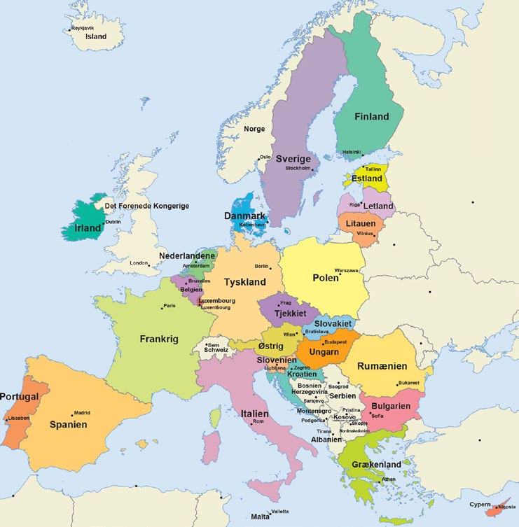
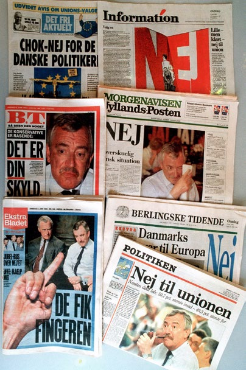
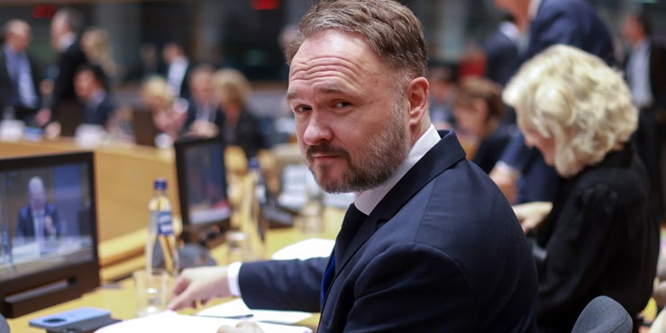
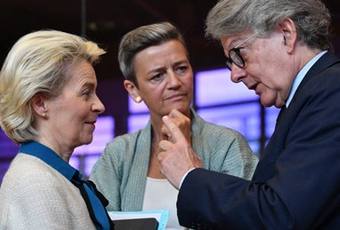
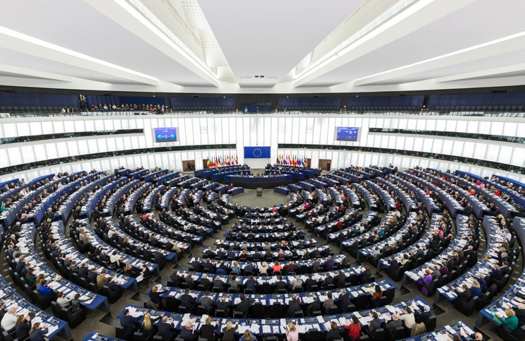

<!doctype html><html lang="da"><head><meta charset="utf-8"><meta name="viewport" content="width=device-width,initial-scale=1"><meta name="referrer" content="no-referrer"><title>4.2 – DANMARK I EUROPA</title><link rel="stylesheet" href="assets/style.css"><style>.page-nav{display:flex;justify-content:space-between;gap:1rem;margin:1rem 0 2rem;font:600 .8rem system-ui,sans-serif}.page-nav a{color:#8c2430}.sentence{display:inline}.speak{font-size:.75em}.page-number{margin:1.2rem 0 .35rem;text-align:right;color:#9a8e83;font:600 .72rem system-ui,sans-serif}.source-note{font:italic .8rem system-ui;color:#5f6b76}</style></head><body><header class="topbar"><div class="tools"><a class="brand" href="index.html">Indfødsretsprøven</a><span class="tool-label">TTS</span><div class="choice"><label><input type="radio" name="tts" value="browser">Browser</label><label><input type="radio" name="tts" value="google">Google</label></div><label class="tool-label voice-label" for="voice">Stemme</label><select id="voice"><option value="">Dansk standard</option></select><label class="tool-label" for="rate">Tempo <output id="rateOut">0.9×</output></label><input id="rate" type="range" min="0.6" max="1.3" step="0.1" value="0.9"></div></header><div class="layout layout-home"><main><nav class="page-nav"><a href="kapitel-4-4.1.html">← Anterior</a><a href="kapitel-4.html">Capítulo 4</a><a href="kapitel-4-4.3.html">Próximo →</a></nav><div class="eyebrow">Kapitel 4</div><h1>4.2 – DANMARK I EUROPA</h1><p class="page-number">sidde 122</p><h2>DEN EUROPÆISKE UNION</h2><p class="para"><span class="sentence">De første skridt i Den Europæiske Unions historie var Det Europæiske Kul- og Stålfællesskab, som blev oprettet i 1952 af seks europæiske lande. <button class="speak" type="button" aria-label="Ouvir sentença" data-text="De første skridt i Den Europæiske Unions historie var Det Europæiske Kul- og Stålfællesskab, som blev oprettet i 1952 af seks europæiske lande.">🔊</button></span> <span class="sentence">Ud over ønsket om at understøtte fred og samarbejde mellem landene var et formål også at genrejse Europa økonomisk og socialt efter krigens ødelæggelser. <button class="speak" type="button" aria-label="Ouvir sentença" data-text="Ud over ønsket om at understøtte fred og samarbejde mellem landene var et formål også at genrejse Europa økonomisk og socialt efter krigens ødelæggelser.">🔊</button></span> <span class="sentence">Samtidig var det politiske verdenskort ændret. <button class="speak" type="button" aria-label="Ouvir sentença" data-text="Samtidig var det politiske verdenskort ændret.">🔊</button></span> <span class="sentence">Europa var ikke længere verdens magt centrum, og derfor skulle de enkelte lande styrkes ved at samarbejde mere. <button class="speak" type="button" aria-label="Ouvir sentença" data-text="Europa var ikke længere verdens magt centrum, og derfor skulle de enkelte lande styrkes ved at samarbejde mere.">🔊</button></span></p><p class="para"><span class="sentence">Nogle få år senere besluttede de seks lande at gå et skridt videre. <button class="speak" type="button" aria-label="Ouvir sentença" data-text="Nogle få år senere besluttede de seks lande at gå et skridt videre.">🔊</button></span> <span class="sentence">Kul- og Stål fællesskabet blev i 1958 udvidet med Det Europæiske Økonomiske Fællesskab og Det Europæiske Atomenergifællesskab. <button class="speak" type="button" aria-label="Ouvir sentença" data-text="Kul- og Stål fællesskabet blev i 1958 udvidet med Det Europæiske Økonomiske Fællesskab og Det Europæiske Atomenergifællesskab.">🔊</button></span> <span class="sentence">Disse tre fællesskaber blev senere til De Europæiske Fællesskaber (EF). <button class="speak" type="button" aria-label="Ouvir sentença" data-text="Disse tre fællesskaber blev senere til De Europæiske Fællesskaber (EF).">🔊</button></span> <span class="sentence">Samarbejdet blev nu et bredere økonomisk samarbejde. <button class="speak" type="button" aria-label="Ouvir sentença" data-text="Samarbejdet blev nu et bredere økonomisk samarbejde.">🔊</button></span> <span class="sentence">Det fik især som formål at afskaffe hindringer for indbyrdes handel mellem landene og dermed etablere et mere fælles marked. <button class="speak" type="button" aria-label="Ouvir sentença" data-text="Det fik især som formål at afskaffe hindringer for indbyrdes handel mellem landene og dermed etablere et mere fælles marked.">🔊</button></span></p><p class="para"><span class="sentence">I 1993 trådte EU’s indre marked i kraft. <button class="speak" type="button" aria-label="Ouvir sentença" data-text="I 1993 trådte EU’s indre marked i kraft.">🔊</button></span> <span class="sentence">Det gør, at varer, tjenesteydelser, personer og kapital kan bevæge sig endnu mere frit mellem medlemslandene end tidli gere. <button class="speak" type="button" aria-label="Ouvir sentença" data-text="Det gør, at varer, tjenesteydelser, personer og kapital kan bevæge sig endnu mere frit mellem medlemslandene end tidli gere.">🔊</button></span> <span class="sentence">Samme år skiftede EF navn til EU, Den Europæiske Union. <button class="speak" type="button" aria-label="Ouvir sentença" data-text="Samme år skiftede EF navn til EU, Den Europæiske Union.">🔊</button></span> <span class="sentence">Navnefor andringen afspejlede, at samarbejdet, som hidtil havde været et samarbejde om økonomiske spørgsmål som handel, landbrug og fiskeri, blev udvidet med en bredere vifte af politiske samarbejdsområder. <button class="speak" type="button" aria-label="Ouvir sentença" data-text="Navnefor andringen afspejlede, at samarbejdet, som hidtil havde været et samarbejde om økonomiske spørgsmål som handel, landbrug og fiskeri, blev udvidet med en bredere vifte af politiske samarbejdsområder.">🔊</button></span></p><p class="para"><span class="sentence">I dag består EU af 27 medlemslande med i alt cirka 450 millioner indbyggere. <button class="speak" type="button" aria-label="Ouvir sentença" data-text="I dag består EU af 27 medlemslande med i alt cirka 450 millioner indbyggere.">🔊</button></span> <span class="sentence">Landene er oplistet nedenfor efter det år, de indtrådte i samarbejdet. <button class="speak" type="button" aria-label="Ouvir sentença" data-text="Landene er oplistet nedenfor efter det år, de indtrådte i samarbejdet.">🔊</button></span></p><p class="para"><span class="sentence">1958: Stiftende medlemmer: Frankrig, Tyskland, Italien, Belgien, Holland og <button class="speak" type="button" aria-label="Ouvir sentença" data-text="1958: Stiftende medlemmer: Frankrig, Tyskland, Italien, Belgien, Holland og">🔊</button></span></p><p class="para"><span class="sentence">Luxembourg 1973: Danmark og Irland 1981: Grækenland 1986: Spanien og Portugal 1995: Østrig, Finland og Sverige 2004: Cypern, Tjekkiet, Estland, Letland, Litauen, Ungarn, Malta, Polen, Slovakiet <button class="speak" type="button" aria-label="Ouvir sentença" data-text="Luxembourg 1973: Danmark og Irland 1981: Grækenland 1986: Spanien og Portugal 1995: Østrig, Finland og Sverige 2004: Cypern, Tjekkiet, Estland, Letland, Litauen, Ungarn, Malta, Polen, Slovakiet">🔊</button></span></p><p class="para"><span class="sentence">og Slovenien 2007: Bulgarien og Rumænien 2013: Kroatien <button class="speak" type="button" aria-label="Ouvir sentença" data-text="og Slovenien 2007: Bulgarien og Rumænien 2013: Kroatien">🔊</button></span></p><p class="para"><span class="sentence">Desuden indtrådte Storbritannien i EU sammen med Danmark og Irland i 1973, men landet forlod samarbejdet igen i 2020. <button class="speak" type="button" aria-label="Ouvir sentença" data-text="Desuden indtrådte Storbritannien i EU sammen med Danmark og Irland i 1973, men landet forlod samarbejdet igen i 2020.">🔊</button></span></p><h2>Læremateriale Til Indfødsretsprøven</h2><p class="page-number">sidde 123</p><p class="para"><span class="sentence">EU’s 27 medlemslande: Belgien, Bulgarien, Cypern, Danmark, Estland, Finland, Frankrig, Grækenland, Irland, Italien, Kroatien, Letland, Litauen, Luxembourg, Malta, Nederlandene, Polen, Portugal, Rumænien, Slovakiet, Slovenien, Spanien, Sverige, Tjekkiet, Tyskland, Ungarn, Østrig. <button class="speak" type="button" aria-label="Ouvir sentença" data-text="EU’s 27 medlemslande: Belgien, Bulgarien, Cypern, Danmark, Estland, Finland, Frankrig, Grækenland, Irland, Italien, Kroatien, Letland, Litauen, Luxembourg, Malta, Nederlandene, Polen, Portugal, Rumænien, Slovakiet, Slovenien, Spanien, Sverige, Tjekkiet, Tyskland, Ungarn, Østrig.">🔊</button></span> <span class="sentence">Grafik: EU. <button class="speak" type="button" aria-label="Ouvir sentença" data-text="Grafik: EU.">🔊</button></span></p><p class="para"><span class="sentence">EU’s 27 medlemslande. <button class="speak" type="button" aria-label="Ouvir sentença" data-text="EU’s 27 medlemslande.">🔊</button></span> <span class="sentence">Grafik: EU. <button class="speak" type="button" aria-label="Ouvir sentença" data-text="Grafik: EU.">🔊</button></span></p><p class="para"><span class="sentence">EU’s formål er at løse fælles europæiske problemer. <button class="speak" type="button" aria-label="Ouvir sentença" data-text="EU’s formål er at løse fælles europæiske problemer.">🔊</button></span> <span class="sentence">Unionen skal styrke samar bejdet på områder, der bedst klares af EU’s medlemslande i fællesskab. <button class="speak" type="button" aria-label="Ouvir sentença" data-text="Unionen skal styrke samar bejdet på områder, der bedst klares af EU’s medlemslande i fællesskab.">🔊</button></span> <span class="sentence">EU’s generelle målsætninger er at fremme økonomisk og social udvikling, at styrke Europas rolle i verden, at styrke beskyttelsen af de europæiske borgeres rettig heder og interesser og at sikre frihed, sikkerhed og retfærdighed. <button class="speak" type="button" aria-label="Ouvir sentença" data-text="EU’s generelle målsætninger er at fremme økonomisk og social udvikling, at styrke Europas rolle i verden, at styrke beskyttelsen af de europæiske borgeres rettig heder og interesser og at sikre frihed, sikkerhed og retfærdighed.">🔊</button></span></p><p class="para"><span class="sentence">EU-landene samarbejder i dag på næsten alle samfundsområder. <button class="speak" type="button" aria-label="Ouvir sentença" data-text="EU-landene samarbejder i dag på næsten alle samfundsområder.">🔊</button></span> <span class="sentence">For eksempel er der etableret en økonomisk og monetær union (ØMU’en). <button class="speak" type="button" aria-label="Ouvir sentença" data-text="For eksempel er der etableret en økonomisk og monetær union (ØMU’en).">🔊</button></span> <span class="sentence">Herunder har 20 medlemslande en fælles valuta (euroen). <button class="speak" type="button" aria-label="Ouvir sentença" data-text="Herunder har 20 medlemslande en fælles valuta (euroen).">🔊</button></span> <span class="sentence">EU-samarbejdet omfatter også en fælles udenrigs- og sikkerhedspolitik. <button class="speak" type="button" aria-label="Ouvir sentença" data-text="EU-samarbejdet omfatter også en fælles udenrigs- og sikkerhedspolitik.">🔊</button></span> <span class="sentence">Desuden er der et politisamar bejde, samarbejde om asyl- og flygtningepolitik samt det såkaldte Schengensamarbejde, hvis formål er at skabe et fælles område uden indre grænser, men med en fælles ydre grænse. <button class="speak" type="button" aria-label="Ouvir sentença" data-text="Desuden er der et politisamar bejde, samarbejde om asyl- og flygtningepolitik samt det såkaldte Schengensamarbejde, hvis formål er at skabe et fælles område uden indre grænser, men med en fælles ydre grænse.">🔊</button></span></p><p class="para"><span class="sentence">Schengen-samarbejdet betyder, at landene i udgangspunktet har fjernet personkontrollen ved grænserne inden for Schengenområdet og lavet fælles visumregler for borgere fra en række lande uden for EU. <button class="speak" type="button" aria-label="Ouvir sentença" data-text="Schengen-samarbejdet betyder, at landene i udgangspunktet har fjernet personkontrollen ved grænserne inden for Schengenområdet og lavet fælles visumregler for borgere fra en række lande uden for EU.">🔊</button></span> <span class="sentence">I EU samarbejder man også om miljøbeskyttelse, sociale forhold, beskæftigelse, arbejdsmarked, <button class="speak" type="button" aria-label="Ouvir sentença" data-text="I EU samarbejder man også om miljøbeskyttelse, sociale forhold, beskæftigelse, arbejdsmarked,">🔊</button></span></p><h2>Læremateriale Til Indfødsretsprøven</h2><figure></figure><p class="page-number">sidde 124</p><p class="para"><span class="sentence">uddannelse, regional udvikling og udenrigspolitiske spørgsmål. <button class="speak" type="button" aria-label="Ouvir sentença" data-text="uddannelse, regional udvikling og udenrigspolitiske spørgsmål.">🔊</button></span> <span class="sentence">Men der er stor forskel på, hvor omfattende samarbejdet er på de enkelte områder. <button class="speak" type="button" aria-label="Ouvir sentença" data-text="Men der er stor forskel på, hvor omfattende samarbejdet er på de enkelte områder.">🔊</button></span> <span class="sentence">På nogle områder udarbejdes der fælles europæisk lovgivning. <button class="speak" type="button" aria-label="Ouvir sentença" data-text="På nogle områder udarbejdes der fælles europæisk lovgivning.">🔊</button></span> <span class="sentence">På andre områder nøjes EU med at understøtte medlemslandenes nationale politikker. <button class="speak" type="button" aria-label="Ouvir sentença" data-text="På andre områder nøjes EU med at understøtte medlemslandenes nationale politikker.">🔊</button></span></p><p class="para"><span class="sentence">I EU-samarbejdet har medlemslandene givet EU noget af den magt, som før lå hos de nationale parlamenter og myndigheder. <button class="speak" type="button" aria-label="Ouvir sentença" data-text="I EU-samarbejdet har medlemslandene givet EU noget af den magt, som før lå hos de nationale parlamenter og myndigheder.">🔊</button></span> <span class="sentence">Samarbejdet i EU betyder, at der på nogle retsområder kan vedtages EU-lovgivning, der gælder direkte for borgerne i det enkelte medlemsland. <button class="speak" type="button" aria-label="Ouvir sentença" data-text="Samarbejdet i EU betyder, at der på nogle retsområder kan vedtages EU-lovgivning, der gælder direkte for borgerne i det enkelte medlemsland.">🔊</button></span> <span class="sentence">EU-reglerne har altså samme virkning som landets egen lovgivning. <button class="speak" type="button" aria-label="Ouvir sentença" data-text="EU-reglerne har altså samme virkning som landets egen lovgivning.">🔊</button></span> <span class="sentence">I dag træffes mange beslutninger i EU desuden ved såkaldte flertalsafgørelser. <button class="speak" type="button" aria-label="Ouvir sentença" data-text="I dag træffes mange beslutninger i EU desuden ved såkaldte flertalsafgørelser.">🔊</button></span> <span class="sentence">Det betyder, at et forslag kan vedtages, uden at samtlige medlemslande er enige. <button class="speak" type="button" aria-label="Ouvir sentença" data-text="Det betyder, at et forslag kan vedtages, uden at samtlige medlemslande er enige.">🔊</button></span> <span class="sentence">Et land kan med andre ord blive stemt ned, men alligevel være bundet af beslutningen. <button class="speak" type="button" aria-label="Ouvir sentença" data-text="Et land kan med andre ord blive stemt ned, men alligevel være bundet af beslutningen.">🔊</button></span> <span class="sentence">EU er organiseret via en række insti tutioner, som fungerer uafhængigt af medlemslandene. <button class="speak" type="button" aria-label="Ouvir sentença" data-text="EU er organiseret via en række insti tutioner, som fungerer uafhængigt af medlemslandene.">🔊</button></span> <span class="sentence">Det drejer sig især om Europa-Kommissionen, Europa-Parlamentet og EU-Domstolen. <button class="speak" type="button" aria-label="Ouvir sentença" data-text="Det drejer sig især om Europa-Kommissionen, Europa-Parlamentet og EU-Domstolen.">🔊</button></span></p><p class="para"><span class="sentence">Et eksempel på en vedtaget EU-lov er databeskyttelsesforordningen, der oftest omtales som GDPR (General Data Protection Regulation). <button class="speak" type="button" aria-label="Ouvir sentença" data-text="Et eksempel på en vedtaget EU-lov er databeskyttelsesforordningen, der oftest omtales som GDPR (General Data Protection Regulation).">🔊</button></span> <span class="sentence">Denne lov trådte i kraft i 2018 og stiller krav til, hvordan personoplysninger i EU-landene behandles. <button class="speak" type="button" aria-label="Ouvir sentença" data-text="Denne lov trådte i kraft i 2018 og stiller krav til, hvordan personoplysninger i EU-landene behandles.">🔊</button></span> <span class="sentence">Dette har haft stor betydning for danske virksomheder og organisationer, da der er kommet nye krav til, hvordan og hvor længe de må opbevare data om medlemmer og kunder samt krav om samtykke ved indtastning af oplysninger om privatpersoner. <button class="speak" type="button" aria-label="Ouvir sentença" data-text="Dette har haft stor betydning for danske virksomheder og organisationer, da der er kommet nye krav til, hvordan og hvor længe de må opbevare data om medlemmer og kunder samt krav om samtykke ved indtastning af oplysninger om privatpersoner.">🔊</button></span> <span class="sentence">En del både offentlige og private virksomheder ansætter medarbejdere til at sikre, at virksomhedernes GDPR-procedurer følges. <button class="speak" type="button" aria-label="Ouvir sentença" data-text="En del både offentlige og private virksomheder ansætter medarbejdere til at sikre, at virksomhedernes GDPR-procedurer følges.">🔊</button></span></p><p class="para"><span class="sentence">EU-samarbejdet kan også omfatte forhold, som ikke fører til decideret EU-lov givning. <button class="speak" type="button" aria-label="Ouvir sentença" data-text="EU-samarbejdet kan også omfatte forhold, som ikke fører til decideret EU-lov givning.">🔊</button></span> <span class="sentence">I stedet er målet, at EU-landene skal lære af hinanden. <button class="speak" type="button" aria-label="Ouvir sentença" data-text="I stedet er målet, at EU-landene skal lære af hinanden.">🔊</button></span> <span class="sentence">Det kan ske ved, at landene i fællesskab formulerer målsætninger for bestemte politikområder og så rapporterer om, hvad man har gjort. <button class="speak" type="button" aria-label="Ouvir sentença" data-text="Det kan ske ved, at landene i fællesskab formulerer målsætninger for bestemte politikområder og så rapporterer om, hvad man har gjort.">🔊</button></span> <span class="sentence">Det kaldes også ’Den åbne koordina tionsmetode’. <button class="speak" type="button" aria-label="Ouvir sentença" data-text="Det kaldes også ’Den åbne koordina tionsmetode’.">🔊</button></span> <span class="sentence">Anbefalingerne drejer sig især om arbejdsmarkedspolitik, økono misk politik og socialpolitik. <button class="speak" type="button" aria-label="Ouvir sentença" data-text="Anbefalingerne drejer sig især om arbejdsmarkedspolitik, økono misk politik og socialpolitik.">🔊</button></span> <span class="sentence">Medlemsstaterne har ikke pligt til at gennemføre anbefalingerne, men de påvirker ofte medlemsstaternes politik. <button class="speak" type="button" aria-label="Ouvir sentença" data-text="Medlemsstaterne har ikke pligt til at gennemføre anbefalingerne, men de påvirker ofte medlemsstaternes politik.">🔊</button></span></p><h2>Danmark Og Eu</h2><p class="para"><span class="sentence">På bestemte områder har EU fået adgang til at vedtage lovgivning, som Folke tinget ellers skulle vedtage. <button class="speak" type="button" aria-label="Ouvir sentença" data-text="På bestemte områder har EU fået adgang til at vedtage lovgivning, som Folke tinget ellers skulle vedtage.">🔊</button></span> <span class="sentence">EU har for eksempel adgang til at vedtage regler, som fjerner handelshindringer mellem medlemslandene. <button class="speak" type="button" aria-label="Ouvir sentença" data-text="EU har for eksempel adgang til at vedtage regler, som fjerner handelshindringer mellem medlemslandene.">🔊</button></span> <span class="sentence">Danmark har altså med sit medlemskab af EU afgivet noget af sin selvbestemmelsesret. <button class="speak" type="button" aria-label="Ouvir sentença" data-text="Danmark har altså med sit medlemskab af EU afgivet noget af sin selvbestemmelsesret.">🔊</button></span> <span class="sentence">Det giver den danske grundlov mulighed for. <button class="speak" type="button" aria-label="Ouvir sentença" data-text="Det giver den danske grundlov mulighed for.">🔊</button></span> <span class="sentence">Der stilles dog ganske strenge krav til at træffe sådan en beslutning. <button class="speak" type="button" aria-label="Ouvir sentença" data-text="Der stilles dog ganske strenge krav til at træffe sådan en beslutning.">🔊</button></span> <span class="sentence">Mindst 5/6 (det vil sige mindst 150) af Folketingets 179 medlemmer skal sige ja til Danmarks deltagelse i det internationale samar bejde, hvis det medfører, at Danmark afgiver national selvbestemmelse. <button class="speak" type="button" aria-label="Ouvir sentença" data-text="Mindst 5/6 (det vil sige mindst 150) af Folketingets 179 medlemmer skal sige ja til Danmarks deltagelse i det internationale samar bejde, hvis det medfører, at Danmark afgiver national selvbestemmelse.">🔊</button></span> <span class="sentence">Hvis færre end 150 medlemmer (men dog et simpelt flertal på 90) siger ja, skal der afholdes folkeafstemning om, hvorvidt Danmark skal deltage i det internationale samarbejde. <button class="speak" type="button" aria-label="Ouvir sentença" data-text="Hvis færre end 150 medlemmer (men dog et simpelt flertal på 90) siger ja, skal der afholdes folkeafstemning om, hvorvidt Danmark skal deltage i det internationale samarbejde.">🔊</button></span></p><h2>Læremateriale Til Indfødsretsprøven</h2><p class="page-number">sidde 125</p><p class="para"><span class="sentence">Selvom meningsmålinger viser, at befolkningen helt overvejende er positive over for EU-medlemskabet, har den ofte været splittet i holdningen til, om EU skal omfatte flere politikområder, og om Danmark skal afskaffe sine EU-forbe hold. <button class="speak" type="button" aria-label="Ouvir sentença" data-text="Selvom meningsmålinger viser, at befolkningen helt overvejende er positive over for EU-medlemskabet, har den ofte været splittet i holdningen til, om EU skal omfatte flere politikområder, og om Danmark skal afskaffe sine EU-forbe hold.">🔊</button></span> <span class="sentence">Fra og med danskerne sagde ja til medlemskab af EF i 1972, har der været afholdt ni folkeafstemninger om ændringer i samarbejdet. <button class="speak" type="button" aria-label="Ouvir sentença" data-text="Fra og med danskerne sagde ja til medlemskab af EF i 1972, har der været afholdt ni folkeafstemninger om ændringer i samarbejdet.">🔊</button></span> <span class="sentence">Seks gange har et flertal af vælgerne stemt ja. <button class="speak" type="button" aria-label="Ouvir sentença" data-text="Seks gange har et flertal af vælgerne stemt ja.">🔊</button></span> <span class="sentence">Tre gange har et flertal stemt nej. <button class="speak" type="button" aria-label="Ouvir sentença" data-text="Tre gange har et flertal stemt nej.">🔊</button></span></p><h2>Danmarks Eu-Forbehold</h2><p class="para"><span class="sentence">Et afgørende valg, hvor den danske befolkning stemte nej, var ved folkeafstem ningen om Maastricht-traktaten i 1992. <button class="speak" type="button" aria-label="Ouvir sentença" data-text="Et afgørende valg, hvor den danske befolkning stemte nej, var ved folkeafstem ningen om Maastricht-traktaten i 1992.">🔊</button></span> <span class="sentence">Danmark fik herefter en særaftale med de andre EU-lande. <button class="speak" type="button" aria-label="Ouvir sentença" data-text="Danmark fik herefter en særaftale med de andre EU-lande.">🔊</button></span> <span class="sentence">Særaftalen er kendt som Edinburgh-aftalen. <button class="speak" type="button" aria-label="Ouvir sentença" data-text="Særaftalen er kendt som Edinburgh-aftalen.">🔊</button></span> <span class="sentence">Den indebærer, at der er dele af EU-samarbejdet, som Danmark ikke deltager i. <button class="speak" type="button" aria-label="Ouvir sentença" data-text="Den indebærer, at der er dele af EU-samarbejdet, som Danmark ikke deltager i.">🔊</button></span> <span class="sentence">Aftalen kaldes også ”de fire forbehold”. <button class="speak" type="button" aria-label="Ouvir sentença" data-text="Aftalen kaldes også ”de fire forbehold”.">🔊</button></span> <span class="sentence">Aftalen blev sendt ud til en folkeafstemning året efter i 1993. <button class="speak" type="button" aria-label="Ouvir sentença" data-text="Aftalen blev sendt ud til en folkeafstemning året efter i 1993.">🔊</button></span> <span class="sentence">Denne gang stemte et flertal af danskerne ja til Maastricht-traktaten med fire følgende EU-forbehold: • unionsborgerskabet, • den fælles valuta (euroen), • forsvarsområdet og • en fælles rets- og udlændingepolitik (retsforbeholdet). <button class="speak" type="button" aria-label="Ouvir sentença" data-text="Denne gang stemte et flertal af danskerne ja til Maastricht-traktaten med fire følgende EU-forbehold: • unionsborgerskabet, • den fælles valuta (euroen), • forsvarsområdet og • en fælles rets- og udlændingepolitik (retsforbeholdet).">🔊</button></span></p><p class="para"><span class="sentence">Retsforbeholdet indebærer, at Danmark ikke deltager i samar bejdet på en række retlige områder, eksempelvis den fælles udlændinge- og asylpolitik samt politiarbejde om grænseover skridende kriminalitet. <button class="speak" type="button" aria-label="Ouvir sentença" data-text="Retsforbeholdet indebærer, at Danmark ikke deltager i samar bejdet på en række retlige områder, eksempelvis den fælles udlændinge- og asylpolitik samt politiarbejde om grænseover skridende kriminalitet.">🔊</button></span> <span class="sentence">I 2015 var der folkeafstemning om, hvorvidt retsforbeholdet skulle omdannes til en tilvalgsordning. <button class="speak" type="button" aria-label="Ouvir sentença" data-text="I 2015 var der folkeafstemning om, hvorvidt retsforbeholdet skulle omdannes til en tilvalgsordning.">🔊</button></span> <span class="sentence">Tilvalgs ordningen ville give Danmark mulighed for selv at bestemme, hvilke dele af det retlige EU-sam arbejde, Danmark vil deltage i, men samtidig muligheden for at vælge at stå uden for andre områder. <button class="speak" type="button" aria-label="Ouvir sentença" data-text="Tilvalgs ordningen ville give Danmark mulighed for selv at bestemme, hvilke dele af det retlige EU-sam arbejde, Danmark vil deltage i, men samtidig muligheden for at vælge at stå uden for andre områder.">🔊</button></span> <span class="sentence">Ved folkeafstemningen i 2015 stemte danskerne nej til en omdannelse af retsforbeholdet. <button class="speak" type="button" aria-label="Ouvir sentença" data-text="Ved folkeafstemningen i 2015 stemte danskerne nej til en omdannelse af retsforbeholdet.">🔊</button></span> <span class="sentence">Danmark deltager herefter ikke i samarbejdet med de andre EU-lande på de fleste retlige områder, heriblandt de områder, der er nævnt ovenfor.Aviser dagen efter, at et flertal af danskerne stemte nej til Maastricht-traktaten i 1992. <button class="speak" type="button" aria-label="Ouvir sentença" data-text="Danmark deltager herefter ikke i samarbejdet med de andre EU-lande på de fleste retlige områder, heriblandt de områder, der er nævnt ovenfor.Aviser dagen efter, at et flertal af danskerne stemte nej til Maastricht-traktaten i 1992.">🔊</button></span> <span class="sentence">Foto: Ritzau Scanpix. <button class="speak" type="button" aria-label="Ouvir sentença" data-text="Foto: Ritzau Scanpix.">🔊</button></span></p><p class="para"><span class="sentence">Aviser dagen efter, at et flertal af danskerne stemte nej til Maastrichttraktaten i 1992. <button class="speak" type="button" aria-label="Ouvir sentença" data-text="Aviser dagen efter, at et flertal af danskerne stemte nej til Maastrichttraktaten i 1992.">🔊</button></span> <span class="sentence">Foto: Ritzau Scanpix. <button class="speak" type="button" aria-label="Ouvir sentença" data-text="Foto: Ritzau Scanpix.">🔊</button></span></p><h2>Læremateriale Til Indfødsretsprøven</h2><figure></figure><p class="page-number">sidde 126</p><p class="para"><span class="sentence">Forbeholdet over for den fælles valuta betyder, at Danmark ikke er forpligtet til at indføre euroen. <button class="speak" type="button" aria-label="Ouvir sentença" data-text="Forbeholdet over for den fælles valuta betyder, at Danmark ikke er forpligtet til at indføre euroen.">🔊</button></span> <span class="sentence">I 2000 var der en folkeafstemning, hvor befolkningen skulle tage stilling til, hvorvidt de ønskede at ophæve forbeholdet og derved indføre euroen i Danmark. <button class="speak" type="button" aria-label="Ouvir sentença" data-text="I 2000 var der en folkeafstemning, hvor befolkningen skulle tage stilling til, hvorvidt de ønskede at ophæve forbeholdet og derved indføre euroen i Danmark.">🔊</button></span> <span class="sentence">53,2 procent af danskerne stemte nej til dette forslag, og 46,8 procent stemte ja. <button class="speak" type="button" aria-label="Ouvir sentença" data-text="53,2 procent af danskerne stemte nej til dette forslag, og 46,8 procent stemte ja.">🔊</button></span> <span class="sentence">Til trods for, at Danmark har et euroforbehold, så deltager Danmark stadig i dele af eurosamarbejdet. <button class="speak" type="button" aria-label="Ouvir sentença" data-text="Til trods for, at Danmark har et euroforbehold, så deltager Danmark stadig i dele af eurosamarbejdet.">🔊</button></span> <span class="sentence">Eksempelvis fører Danmark såkaldt fastkurs politik, det vil sige, at kursen på den danske krone følger euroens kurs, så man altid kan købe 1 euro for cirka 7,50 danske kroner. <button class="speak" type="button" aria-label="Ouvir sentença" data-text="Eksempelvis fører Danmark såkaldt fastkurs politik, det vil sige, at kursen på den danske krone følger euroens kurs, så man altid kan købe 1 euro for cirka 7,50 danske kroner.">🔊</button></span> <span class="sentence">Ligeledes følger Danmark rentehævninger eller rentesænkninger fra Den Europæiske Centralbank. <button class="speak" type="button" aria-label="Ouvir sentença" data-text="Ligeledes følger Danmark rentehævninger eller rentesænkninger fra Den Europæiske Centralbank.">🔊</button></span></p><p class="para"><span class="sentence">Tidligere havde Danmark også et forbehold over for EU’s forsvars- og sikker hedspolitik, så Danmark for eksempel ikke deltog i militære operationer, som er en del af EU-samarbejdet. <button class="speak" type="button" aria-label="Ouvir sentença" data-text="Tidligere havde Danmark også et forbehold over for EU’s forsvars- og sikker hedspolitik, så Danmark for eksempel ikke deltog i militære operationer, som er en del af EU-samarbejdet.">🔊</button></span> <span class="sentence">Dette såkaldte forsvars-forbehold blev ophævet som følge af en folkeafstemning den 1. <button class="speak" type="button" aria-label="Ouvir sentença" data-text="Dette såkaldte forsvars-forbehold blev ophævet som følge af en folkeafstemning den 1.">🔊</button></span> <span class="sentence">juni 2022. <button class="speak" type="button" aria-label="Ouvir sentença" data-text="juni 2022.">🔊</button></span> <span class="sentence">Et flertal på 66,9 procent stemte ja til at ophæve forbeholdet, mens et mindretal på 33,1 procent stemte nej. <button class="speak" type="button" aria-label="Ouvir sentença" data-text="Et flertal på 66,9 procent stemte ja til at ophæve forbeholdet, mens et mindretal på 33,1 procent stemte nej.">🔊</button></span></p><p class="para"><span class="sentence">Danmarks forbehold over for unionsborgerskabet blev indført for at garantere, at unionsborgerskabet ikke skulle udvikle sig til noget på linje med det nationale statsborgerskab eller helt træde i stedet for dette. <button class="speak" type="button" aria-label="Ouvir sentença" data-text="Danmarks forbehold over for unionsborgerskabet blev indført for at garantere, at unionsborgerskabet ikke skulle udvikle sig til noget på linje med det nationale statsborgerskab eller helt træde i stedet for dette.">🔊</button></span> <span class="sentence">Med Amsterdam-traktatens ikrafttræden i 1999 kom dette til at gælde for alle medlemslande. <button class="speak" type="button" aria-label="Ouvir sentença" data-text="Med Amsterdam-traktatens ikrafttræden i 1999 kom dette til at gælde for alle medlemslande.">🔊</button></span> <span class="sentence">Derfor er dette danske EU-forbehold heller ikke længere relevant. <button class="speak" type="button" aria-label="Ouvir sentença" data-text="Derfor er dette danske EU-forbehold heller ikke længere relevant.">🔊</button></span></p><h2>Eu&#x27;S Institutioner Og Danmarks Repræsentation I Eu</h2><p class="para"><span class="sentence">De vigtigste EU-institutioner er 1) Europa-Kommissionen, 2) Europa-Parla mentet, 3) Det Europæiske Råd (også kaldet EU-topmøder) 4) Rådet for Den Europæiske Union (kort: Rådet eller Ministerrådet) og 5) EU-Domstolen. <button class="speak" type="button" aria-label="Ouvir sentença" data-text="De vigtigste EU-institutioner er 1) Europa-Kommissionen, 2) Europa-Parla mentet, 3) Det Europæiske Råd (også kaldet EU-topmøder) 4) Rådet for Den Europæiske Union (kort: Rådet eller Ministerrådet) og 5) EU-Domstolen.">🔊</button></span></p><p class="para"><span class="sentence">Kort fortalt er det hovedreglen, at Europa-Kommissionen stiller forslag om ny EU-lovgivning. <button class="speak" type="button" aria-label="Ouvir sentença" data-text="Kort fortalt er det hovedreglen, at Europa-Kommissionen stiller forslag om ny EU-lovgivning.">🔊</button></span> <span class="sentence">Det er så Rådet og Europa-Parlamentet, der i fællesskab vedtager, ændrer i eller forkaster forslaget. <button class="speak" type="button" aria-label="Ouvir sentença" data-text="Det er så Rådet og Europa-Parlamentet, der i fællesskab vedtager, ændrer i eller forkaster forslaget.">🔊</button></span> <span class="sentence">Danmark er repræsenteret i EU på forskellig vis i disse institutioner. <button class="speak" type="button" aria-label="Ouvir sentença" data-text="Danmark er repræsenteret i EU på forskellig vis i disse institutioner.">🔊</button></span></p><p class="para"><span class="sentence">Europa-Kommissionen <button class="speak" type="button" aria-label="Ouvir sentença" data-text="Europa-Kommissionen">🔊</button></span></p><p class="para"><span class="sentence">Ligesom de andre medlemslande i EU sender Danmark én kommissær til Europa-kommissionen. <button class="speak" type="button" aria-label="Ouvir sentença" data-text="Ligesom de andre medlemslande i EU sender Danmark én kommissær til Europa-kommissionen.">🔊</button></span> <span class="sentence">Europa-Kommissionen har i dag 27 medlemmer. <button class="speak" type="button" aria-label="Ouvir sentença" data-text="Europa-Kommissionen har i dag 27 medlemmer.">🔊</button></span> <span class="sentence">Europa-Kommissionen skal komme med konkrete forslag til ny lovgivning. <button class="speak" type="button" aria-label="Ouvir sentença" data-text="Europa-Kommissionen skal komme med konkrete forslag til ny lovgivning.">🔊</button></span> <span class="sentence">Den skal også tage andre initiativer, der kan føre traktaternes og EU-topmødernes overordnede politiske målsætninger ud i livet. <button class="speak" type="button" aria-label="Ouvir sentença" data-text="Den skal også tage andre initiativer, der kan føre traktaternes og EU-topmødernes overordnede politiske målsætninger ud i livet.">🔊</button></span> <span class="sentence">Europa-Kommissionen har ret og pligt til at foreslå ny lovgivning for at gennemføre EU-politikken. <button class="speak" type="button" aria-label="Ouvir sentença" data-text="Europa-Kommissionen har ret og pligt til at foreslå ny lovgivning for at gennemføre EU-politikken.">🔊</button></span></p><p class="para"><span class="sentence">Europa-Kommissionen kontrollerer også, om medlemslandene retter sig efter EU-lovgivningen. <button class="speak" type="button" aria-label="Ouvir sentença" data-text="Europa-Kommissionen kontrollerer også, om medlemslandene retter sig efter EU-lovgivningen.">🔊</button></span> <span class="sentence">Hvis et land ikke gør det, kan Europa-Kommissionen rejse en sag imod det pågældende land ved EU-Domstolen. <button class="speak" type="button" aria-label="Ouvir sentença" data-text="Hvis et land ikke gør det, kan Europa-Kommissionen rejse en sag imod det pågældende land ved EU-Domstolen.">🔊</button></span></p><h2>Læremateriale Til Indfødsretsprøven</h2><p class="page-number">sidde 127</p><p class="para"><span class="sentence">De enkelte medlemmer af Kommissionen udpeges af de enkelte medlemslande for en femårig periode og skal fungere uafhængigt af de medlemslande, som de kommer fra. <button class="speak" type="button" aria-label="Ouvir sentença" data-text="De enkelte medlemmer af Kommissionen udpeges af de enkelte medlemslande for en femårig periode og skal fungere uafhængigt af de medlemslande, som de kommer fra.">🔊</button></span> <span class="sentence">Det vil sige, at de kun skal arbejde for EU’s interesser og ikke for det pågældende medlemsland. <button class="speak" type="button" aria-label="Ouvir sentença" data-text="Det vil sige, at de kun skal arbejde for EU’s interesser og ikke for det pågældende medlemsland.">🔊</button></span> <span class="sentence">De har ligesom de danske ministre ansvar for hver sit særlige område. <button class="speak" type="button" aria-label="Ouvir sentença" data-text="De har ligesom de danske ministre ansvar for hver sit særlige område.">🔊</button></span> <span class="sentence">For eksempel er der udpeget en kommissær for økonomi og produktivitet, en kommissær for klima, en kommissær for landbrug og fødevarer, en kommissær for forsvar og rumfart, en kommissær for fiskeri og oceaner med videre. <button class="speak" type="button" aria-label="Ouvir sentença" data-text="For eksempel er der udpeget en kommissær for økonomi og produktivitet, en kommissær for klima, en kommissær for landbrug og fødevarer, en kommissær for forsvar og rumfart, en kommissær for fiskeri og oceaner med videre.">🔊</button></span></p><p class="para"><span class="sentence">Danmarks EU-kommissær har siden 2024 været Dan Jørgensen (født 1975) fra Socialdemokratiet, som tidligere har været medlem af Europa-Parlamentet og klimaminister i Danmark. <button class="speak" type="button" aria-label="Ouvir sentença" data-text="Danmarks EU-kommissær har siden 2024 været Dan Jørgensen (født 1975) fra Socialdemokratiet, som tidligere har været medlem af Europa-Parlamentet og klimaminister i Danmark.">🔊</button></span> <span class="sentence">Han er kommissær for energi og boliger.Danmarks EU-kommissær Dan Jørgensen til møde m <button class="speak" type="button" aria-label="Ouvir sentença" data-text="Han er kommissær for energi og boliger.Danmarks EU-kommissær Dan Jørgensen til møde m">🔊</button></span></p><p class="para"><span class="sentence">Danmarks EU-kommissær Dan Jørgensen til møde med energiministrene fra EU&#x27;s medlemsstater. <button class="speak" type="button" aria-label="Ouvir sentença" data-text="Danmarks EU-kommissær Dan Jørgensen til møde med energiministrene fra EU&#x27;s medlemsstater.">🔊</button></span> <span class="sentence">Foto: Olivier Hoslet/Ritzau Scanpix. <button class="speak" type="button" aria-label="Ouvir sentença" data-text="Foto: Olivier Hoslet/Ritzau Scanpix.">🔊</button></span></p><p class="para"><span class="sentence">I perioden 2014-24 var Margrethe Vestager (f. <button class="speak" type="button" aria-label="Ouvir sentença" data-text="I perioden 2014-24 var Margrethe Vestager (f.">🔊</button></span> <span class="sentence">1968) fra Radikale Venstre, som tidligere var økonomi- og indenrigsminister i Danmark, udpeget som dansk kommissær. <button class="speak" type="button" aria-label="Ouvir sentença" data-text="1968) fra Radikale Venstre, som tidligere var økonomi- og indenrigsminister i Danmark, udpeget som dansk kommissær.">🔊</button></span> <span class="sentence">Margrethe Vestager var næstformand for Kommissionen og kommissær for konkurrencepolitikken i EU. <button class="speak" type="button" aria-label="Ouvir sentença" data-text="Margrethe Vestager var næstformand for Kommissionen og kommissær for konkurrencepolitikken i EU.">🔊</button></span></p><p class="para"><span class="sentence">Til at hjælpe med at foreslå og gennemføre EU-lovgivningen har EU-kommis særerne en stor forvaltning, som minder om de danske ministerier. <button class="speak" type="button" aria-label="Ouvir sentença" data-text="Til at hjælpe med at foreslå og gennemføre EU-lovgivningen har EU-kommis særerne en stor forvaltning, som minder om de danske ministerier.">🔊</button></span> <span class="sentence">I EU kaldes de generaldirektorater.EU-kommissionens formand Ursula von der Leyen sammen med to tidligere EU-kommissærer: Danske Margrethe Vestager og franske Thierry Breton. <button class="speak" type="button" aria-label="Ouvir sentença" data-text="I EU kaldes de generaldirektorater.EU-kommissionens formand Ursula von der Leyen sammen med to tidligere EU-kommissærer: Danske Margrethe Vestager og franske Thierry Breton.">🔊</button></span> <span class="sentence">Foto: John Thys/Ritzau Scanpix. <button class="speak" type="button" aria-label="Ouvir sentença" data-text="Foto: John Thys/Ritzau Scanpix.">🔊</button></span></p><p class="para"><span class="sentence">EU-kommissionens formand Ursula von der Leyen sammen med to tidligere EU-kommissærer: Danske Margrethe Vestager og franske Thierry Breton. <button class="speak" type="button" aria-label="Ouvir sentença" data-text="EU-kommissionens formand Ursula von der Leyen sammen med to tidligere EU-kommissærer: Danske Margrethe Vestager og franske Thierry Breton.">🔊</button></span> <span class="sentence">Foto: John Thys/ Ritzau Scanpix. <button class="speak" type="button" aria-label="Ouvir sentença" data-text="Foto: John Thys/ Ritzau Scanpix.">🔊</button></span></p><h2>Læremateriale Til Indfødsretsprøven</h2><figure></figure><figure></figure><p class="page-number">sidde 128</p><p class="para"><span class="sentence">Europa-Parlamentet <button class="speak" type="button" aria-label="Ouvir sentença" data-text="Europa-Parlamentet">🔊</button></span></p><p class="para"><span class="sentence">Europa-Parlamentet er den direkte folkevalgte forsamling i det europæ iske samarbejde, idet dets medlemmer vælges af borgerne i EU’s medlems lande. <button class="speak" type="button" aria-label="Ouvir sentença" data-text="Europa-Parlamentet er den direkte folkevalgte forsamling i det europæ iske samarbejde, idet dets medlemmer vælges af borgerne i EU’s medlems lande.">🔊</button></span> <span class="sentence">Europa-Parlamentet fungerer overordnet set som en slags lovgivende myndighed i EU. <button class="speak" type="button" aria-label="Ouvir sentença" data-text="Europa-Parlamentet fungerer overordnet set som en slags lovgivende myndighed i EU.">🔊</button></span> <span class="sentence">Det minder om det danske Folketing men har mere begrænset magt. <button class="speak" type="button" aria-label="Ouvir sentença" data-text="Det minder om det danske Folketing men har mere begrænset magt.">🔊</button></span> <span class="sentence">For eksempel kan Europa-Parlamentet ikke opkræve skat. <button class="speak" type="button" aria-label="Ouvir sentença" data-text="For eksempel kan Europa-Parlamentet ikke opkræve skat.">🔊</button></span></p><p class="para"><span class="sentence">Europa-Parlamentet vedtager ny lovgivning på baggrund af forslag fra Europa-Kommissionen. <button class="speak" type="button" aria-label="Ouvir sentença" data-text="Europa-Parlamentet vedtager ny lovgivning på baggrund af forslag fra Europa-Kommissionen.">🔊</button></span> <span class="sentence">Derudover skal Europa-Parlamentet blandt andet også vedtage EU’s udgiftsbudget. <button class="speak" type="button" aria-label="Ouvir sentença" data-text="Derudover skal Europa-Parlamentet blandt andet også vedtage EU’s udgiftsbudget.">🔊</button></span> <span class="sentence">Europa-Parlamentet består af 720 medlemmer fra de 27 EU-lande. <button class="speak" type="button" aria-label="Ouvir sentença" data-text="Europa-Parlamentet består af 720 medlemmer fra de 27 EU-lande.">🔊</button></span> <span class="sentence">Hvert land har et antal pladser, der afspejler landets indbyg gertal. <button class="speak" type="button" aria-label="Ouvir sentença" data-text="Hvert land har et antal pladser, der afspejler landets indbyg gertal.">🔊</button></span> <span class="sentence">Danmark har 15 medlemmer i Europa-Parlamentet, mens store lande som Tyskland, Frankrig og Italien har et større antal medlemmer. <button class="speak" type="button" aria-label="Ouvir sentença" data-text="Danmark har 15 medlemmer i Europa-Parlamentet, mens store lande som Tyskland, Frankrig og Italien har et større antal medlemmer.">🔊</button></span></p><p class="para"><span class="sentence">Der afholdes valg til Europa-Parlamentet hvert femte år. <button class="speak" type="button" aria-label="Ouvir sentença" data-text="Der afholdes valg til Europa-Parlamentet hvert femte år.">🔊</button></span> <span class="sentence">Medlemmerne i Europa-Parlamentet er grupperet i partier eller grupper ud fra deres politiske holdninger – og ikke efter, hvilket land de kommer fra. <button class="speak" type="button" aria-label="Ouvir sentença" data-text="Medlemmerne i Europa-Parlamentet er grupperet i partier eller grupper ud fra deres politiske holdninger – og ikke efter, hvilket land de kommer fra.">🔊</button></span> <span class="sentence">De danske medlemmer af Europa-Parlamentet er derfor fordelt på en konservativ gruppe, en socialdemo kratisk gruppe, en liberal gruppe, en grøn gruppe og andre grupper. <button class="speak" type="button" aria-label="Ouvir sentença" data-text="De danske medlemmer af Europa-Parlamentet er derfor fordelt på en konservativ gruppe, en socialdemo kratisk gruppe, en liberal gruppe, en grøn gruppe og andre grupper.">🔊</button></span></p><p class="para"><span class="sentence">Det seneste valg til Europa-Parlamentet blev afholdt i juni 2024. <button class="speak" type="button" aria-label="Ouvir sentença" data-text="Det seneste valg til Europa-Parlamentet blev afholdt i juni 2024.">🔊</button></span> <span class="sentence">Som følge af dette valg fordeler de 15 danske medlemmer af Europa-Parlamentet sig således på følgende partier: Socialistisk Folkeparti (SF) 3, Socialdemokratiet 3, Venstre 2, Det Konservative Folkeparti 1, Danmarksdemokraterne 1, Radikale Venstre 1, Enhedslisten 1, Liberal Alliance 1, Dansk Folkeparti 1 og Moderaterne 1. <button class="speak" type="button" aria-label="Ouvir sentença" data-text="Som følge af dette valg fordeler de 15 danske medlemmer af Europa-Parlamentet sig således på følgende partier: Socialistisk Folkeparti (SF) 3, Socialdemokratiet 3, Venstre 2, Det Konservative Folkeparti 1, Danmarksdemokraterne 1, Radikale Venstre 1, Enhedslisten 1, Liberal Alliance 1, Dansk Folkeparti 1 og Moderaterne 1.">🔊</button></span></p><p class="para"><span class="sentence">Alternativet stillede også op til valget, men fik ikke nok stemmer til at blive valgt.Europa <button class="speak" type="button" aria-label="Ouvir sentença" data-text="Alternativet stillede også op til valget, men fik ikke nok stemmer til at blive valgt.Europa">🔊</button></span></p><p class="para"><span class="sentence">Europa-Parlamentet i Bruxelles. <button class="speak" type="button" aria-label="Ouvir sentença" data-text="Europa-Parlamentet i Bruxelles.">🔊</button></span></p><h2>Læremateriale Til Indfødsretsprøven</h2><figure></figure><p class="page-number">sidde 129</p><p class="para"><span class="sentence">Det Europæiske Råd (EU-topmøder) <button class="speak" type="button" aria-label="Ouvir sentença" data-text="Det Europæiske Råd (EU-topmøder)">🔊</button></span></p><p class="para"><span class="sentence">Den danske statsminister mødes med de andre regeringsledere i EU til EU-top møder i Det Europæiske Råd. <button class="speak" type="button" aria-label="Ouvir sentença" data-text="Den danske statsminister mødes med de andre regeringsledere i EU til EU-top møder i Det Europæiske Råd.">🔊</button></span> <span class="sentence">Her fastlægger lederne de overordnede politiske rammer for samarbejdet i EU. <button class="speak" type="button" aria-label="Ouvir sentença" data-text="Her fastlægger lederne de overordnede politiske rammer for samarbejdet i EU.">🔊</button></span> <span class="sentence">De tager også beslutninger om andre vigtige poli tiske spørgsmål. <button class="speak" type="button" aria-label="Ouvir sentença" data-text="De tager også beslutninger om andre vigtige poli tiske spørgsmål.">🔊</button></span> <span class="sentence">Det kan for eksempel være om EU’s udvidelse, EU’s traktater eller EU’s politik på den globale scene. <button class="speak" type="button" aria-label="Ouvir sentença" data-text="Det kan for eksempel være om EU’s udvidelse, EU’s traktater eller EU’s politik på den globale scene.">🔊</button></span></p><p class="para"><span class="sentence">Beslutningerne træffes som hovedregel ved enighed. <button class="speak" type="button" aria-label="Ouvir sentença" data-text="Beslutningerne træffes som hovedregel ved enighed.">🔊</button></span></p><p class="para"><span class="sentence">Rådet (Rådet for Den Europæiske Union) <button class="speak" type="button" aria-label="Ouvir sentença" data-text="Rådet (Rådet for Den Europæiske Union)">🔊</button></span></p><p class="para"><span class="sentence">I Rådet mødes medlemsstaternes ministre fra medlemslandenes regeringer med jævne mellemrum. <button class="speak" type="button" aria-label="Ouvir sentença" data-text="I Rådet mødes medlemsstaternes ministre fra medlemslandenes regeringer med jævne mellemrum.">🔊</button></span> <span class="sentence">Derfor kaldes denne institution også ofte Ministerrådet. <button class="speak" type="button" aria-label="Ouvir sentença" data-text="Derfor kaldes denne institution også ofte Ministerrådet.">🔊</button></span> <span class="sentence">Rådet består således i praksis af skiftende fagministre, én fra hvert land. <button class="speak" type="button" aria-label="Ouvir sentença" data-text="Rådet består således i praksis af skiftende fagministre, én fra hvert land.">🔊</button></span> <span class="sentence">Når der for eksempel skal drøftes og vedtages noget, der vedrører miljøet, er det de 27 miljøministre, der mødes. <button class="speak" type="button" aria-label="Ouvir sentença" data-text="Når der for eksempel skal drøftes og vedtages noget, der vedrører miljøet, er det de 27 miljøministre, der mødes.">🔊</button></span> <span class="sentence">Hvis det drejer sig om det indre marked, mødes erhvervsministrene. <button class="speak" type="button" aria-label="Ouvir sentença" data-text="Hvis det drejer sig om det indre marked, mødes erhvervsministrene.">🔊</button></span> <span class="sentence">Og hvis et forslag om EU-lovgivning vedrørende landbrug serhvervet er på dagsordenen, mødes fødevareministrene. <button class="speak" type="button" aria-label="Ouvir sentença" data-text="Og hvis et forslag om EU-lovgivning vedrørende landbrug serhvervet er på dagsordenen, mødes fødevareministrene.">🔊</button></span></p><p class="para"><span class="sentence">Rådet lovgiver sammen med Europa-Parlamentet. <button class="speak" type="button" aria-label="Ouvir sentença" data-text="Rådet lovgiver sammen med Europa-Parlamentet.">🔊</button></span> <span class="sentence">Det betyder, at vedtagelse af EU-lovgivning som udgangspunkt kræver tilslutning fra både Rådet og EuropaParlamentet. <button class="speak" type="button" aria-label="Ouvir sentença" data-text="Det betyder, at vedtagelse af EU-lovgivning som udgangspunkt kræver tilslutning fra både Rådet og EuropaParlamentet.">🔊</button></span> <span class="sentence">På enkelte områder skal Europa-Parlamentet imidlertid kun høres, mens det er Rådet, der træffer den endelige beslutning. <button class="speak" type="button" aria-label="Ouvir sentença" data-text="På enkelte områder skal Europa-Parlamentet imidlertid kun høres, mens det er Rådet, der træffer den endelige beslutning.">🔊</button></span></p><p class="para"><span class="sentence">De forskellige lande i EU skiftes også til at have et såkaldt formandskab. <button class="speak" type="button" aria-label="Ouvir sentença" data-text="De forskellige lande i EU skiftes også til at have et såkaldt formandskab.">🔊</button></span> <span class="sentence">Dette går på skift hver sjette måned, og landet, der har &quot;EU-formandskabet&quot;, leder møderne i Rådet og i en lang række udvalg og komiteer. <button class="speak" type="button" aria-label="Ouvir sentença" data-text="Dette går på skift hver sjette måned, og landet, der har &quot;EU-formandskabet&quot;, leder møderne i Rådet og i en lang række udvalg og komiteer.">🔊</button></span> <span class="sentence">Sidste danske EU-for mandskab var i 2025. <button class="speak" type="button" aria-label="Ouvir sentença" data-text="Sidste danske EU-for mandskab var i 2025.">🔊</button></span></p><p class="para"><span class="sentence">EU-Domstolen <button class="speak" type="button" aria-label="Ouvir sentença" data-text="EU-Domstolen">🔊</button></span></p><p class="para"><span class="sentence">Ligesom de andre lande i EU har Danmark har også én dommer i Den Europæ iske Unions Domstol – i daglig tale ofte kaldet EU-Domstolen. <button class="speak" type="button" aria-label="Ouvir sentença" data-text="Ligesom de andre lande i EU har Danmark har også én dommer i Den Europæ iske Unions Domstol – i daglig tale ofte kaldet EU-Domstolen.">🔊</button></span> <span class="sentence">EU-Domstolens opgave er at sikre, at EU-lovgivningen bliver overholdt. <button class="speak" type="button" aria-label="Ouvir sentença" data-text="EU-Domstolens opgave er at sikre, at EU-lovgivningen bliver overholdt.">🔊</button></span> <span class="sentence">Domstolen kan blandt andet afgøre konflikter mellem to medlemslande og mellem EU og det enkelte medlemsland. <button class="speak" type="button" aria-label="Ouvir sentença" data-text="Domstolen kan blandt andet afgøre konflikter mellem to medlemslande og mellem EU og det enkelte medlemsland.">🔊</button></span> <span class="sentence">EU-Domstolen kan også bestemme, hvordan EU-reglerne skal forstås. <button class="speak" type="button" aria-label="Ouvir sentença" data-text="EU-Domstolen kan også bestemme, hvordan EU-reglerne skal forstås.">🔊</button></span> <span class="sentence">Hvis en national domstol i et medlemsland er i tvivl om dét, kan den spørge EU-Domstolen. <button class="speak" type="button" aria-label="Ouvir sentença" data-text="Hvis en national domstol i et medlemsland er i tvivl om dét, kan den spørge EU-Domstolen.">🔊</button></span></p><h2>Læremateriale Til Indfødsretsprøven</h2><p class="page-number">sidde 130</p><h2>EUROPARÅDET</h2><p class="para"><span class="sentence">Danmark har været medlem af Europarådet, siden det blev oprettet i 1949. <button class="speak" type="button" aria-label="Ouvir sentença" data-text="Danmark har været medlem af Europarådet, siden det blev oprettet i 1949.">🔊</button></span> <span class="sentence">Euro parådet bestod i 1949 af ti vesteuropæiske demokratier. <button class="speak" type="button" aria-label="Ouvir sentença" data-text="Euro parådet bestod i 1949 af ti vesteuropæiske demokratier.">🔊</button></span> <span class="sentence">I dag er 47 europæiske stater medlemmer. <button class="speak" type="button" aria-label="Ouvir sentença" data-text="I dag er 47 europæiske stater medlemmer.">🔊</button></span> <span class="sentence">Europarådet er ikke en EU-institution. <button class="speak" type="button" aria-label="Ouvir sentença" data-text="Europarådet er ikke en EU-institution.">🔊</button></span> <span class="sentence">Det er en selvstændig organisation i Europa. <button class="speak" type="button" aria-label="Ouvir sentença" data-text="Det er en selvstændig organisation i Europa.">🔊</button></span> <span class="sentence">Europarådet er således en helt anden institution end Det Europæiske Råd. <button class="speak" type="button" aria-label="Ouvir sentença" data-text="Europarådet er således en helt anden institution end Det Europæiske Råd.">🔊</button></span></p><p class="para"><span class="sentence">Før et land kan blive medlem af Europarådet, skal det anerkende dets borgeres personlige og politiske frihedsrettigheder. <button class="speak" type="button" aria-label="Ouvir sentença" data-text="Før et land kan blive medlem af Europarådet, skal det anerkende dets borgeres personlige og politiske frihedsrettigheder.">🔊</button></span> <span class="sentence">Europarådets formål er at sikre et tæt samarbejde mellem sine medlemslande på en lang række politiske områder. <button class="speak" type="button" aria-label="Ouvir sentença" data-text="Europarådets formål er at sikre et tæt samarbejde mellem sine medlemslande på en lang række politiske områder.">🔊</button></span> <span class="sentence">Målet er også at udbygge det europæiske demokrati. <button class="speak" type="button" aria-label="Ouvir sentença" data-text="Målet er også at udbygge det europæiske demokrati.">🔊</button></span> <span class="sentence">Rusland blev suspenderet fra Europarådet efter angrebet på Ukraine i 2022. <button class="speak" type="button" aria-label="Ouvir sentença" data-text="Rusland blev suspenderet fra Europarådet efter angrebet på Ukraine i 2022.">🔊</button></span></p><p class="para"><span class="sentence">Europarådet står blandt andet bag udarbejdelsen af Den Europæiske Menneske rettighedskonvention fra 1950. <button class="speak" type="button" aria-label="Ouvir sentença" data-text="Europarådet står blandt andet bag udarbejdelsen af Den Europæiske Menneske rettighedskonvention fra 1950.">🔊</button></span> <span class="sentence">Det har også oprettet en domstol på menneske rettighedsområdet – Den Europæiske Menneskerettighedsdomstol – som skal sikre, at konventionen overholdes. <button class="speak" type="button" aria-label="Ouvir sentença" data-text="Det har også oprettet en domstol på menneske rettighedsområdet – Den Europæiske Menneskerettighedsdomstol – som skal sikre, at konventionen overholdes.">🔊</button></span> <span class="sentence">Ved at tiltræde konventionen har Danmark forpligtet sig til at overholde de grundlæggende friheds- og menneskerettig heder. <button class="speak" type="button" aria-label="Ouvir sentença" data-text="Ved at tiltræde konventionen har Danmark forpligtet sig til at overholde de grundlæggende friheds- og menneskerettig heder.">🔊</button></span> <span class="sentence">Det vil blandt andet sige ytrings-, forsamlings- og religionsfrihed. <button class="speak" type="button" aria-label="Ouvir sentença" data-text="Det vil blandt andet sige ytrings-, forsamlings- og religionsfrihed.">🔊</button></span> <span class="sentence">I 1992 blev Menneskerettighedskonventionen formelt indarbejdet i dansk lov. <button class="speak" type="button" aria-label="Ouvir sentença" data-text="I 1992 blev Menneskerettighedskonventionen formelt indarbejdet i dansk lov.">🔊</button></span> <span class="sentence">Den står dermed på linje med andre love i Danmark, men under grundloven. <button class="speak" type="button" aria-label="Ouvir sentença" data-text="Den står dermed på linje med andre love i Danmark, men under grundloven.">🔊</button></span> <span class="sentence">Danmark har samtidig anerkendt, at enkeltpersoner under nærmere betingelser kan indbringe en sag mod Danmark for Den Europæiske Menneskerettighedsdomstol. <button class="speak" type="button" aria-label="Ouvir sentença" data-text="Danmark har samtidig anerkendt, at enkeltpersoner under nærmere betingelser kan indbringe en sag mod Danmark for Den Europæiske Menneskerettighedsdomstol.">🔊</button></span></p><h2>Læremateriale Til Indfødsretsprøven</h2><p class="source-note">Fonte: Læremateriale til Indfødsretsprøven, SIRI.</p><nav class="page-nav"><a href="kapitel-4-4.1.html">← Anterior</a><a href="kapitel-4.html">Capítulo 4</a><a href="kapitel-4-4.3.html">Próximo →</a></nav></main></div><script src="https://www.gstatic.com/firebasejs/8.10.0/firebase-app.js"></script><script src="https://www.gstatic.com/firebasejs/8.10.0/firebase-auth.js"></script><script src="https://www.gstatic.com/firebasejs/8.10.0/firebase-firestore.js"></script><script src="assets/firebase-client.js"></script><script src="assets/custom-words.js"></script><script src="assets/app.js"></script></body></html>